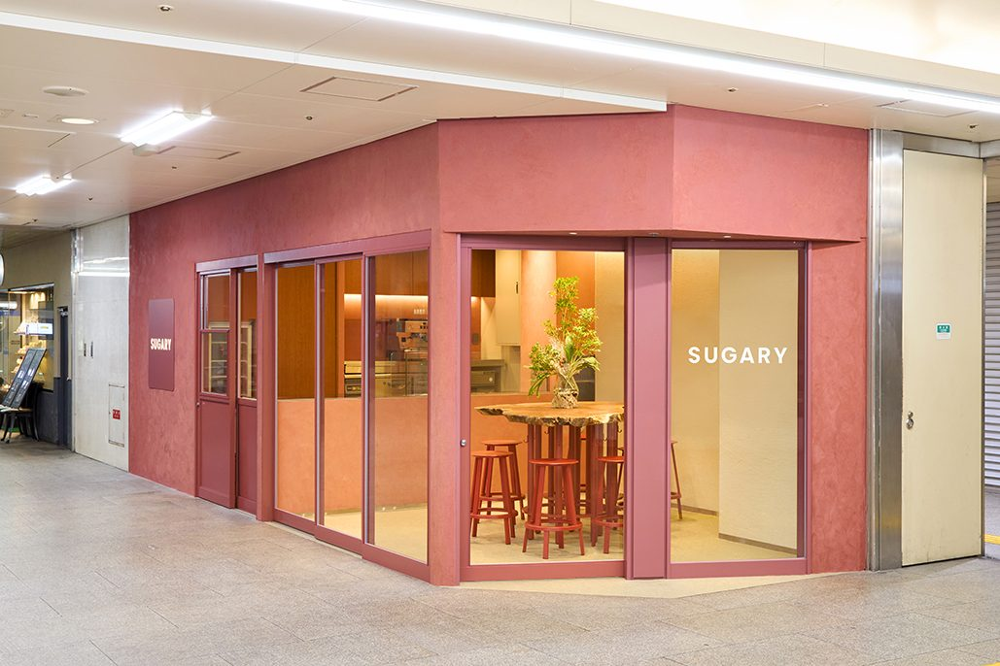
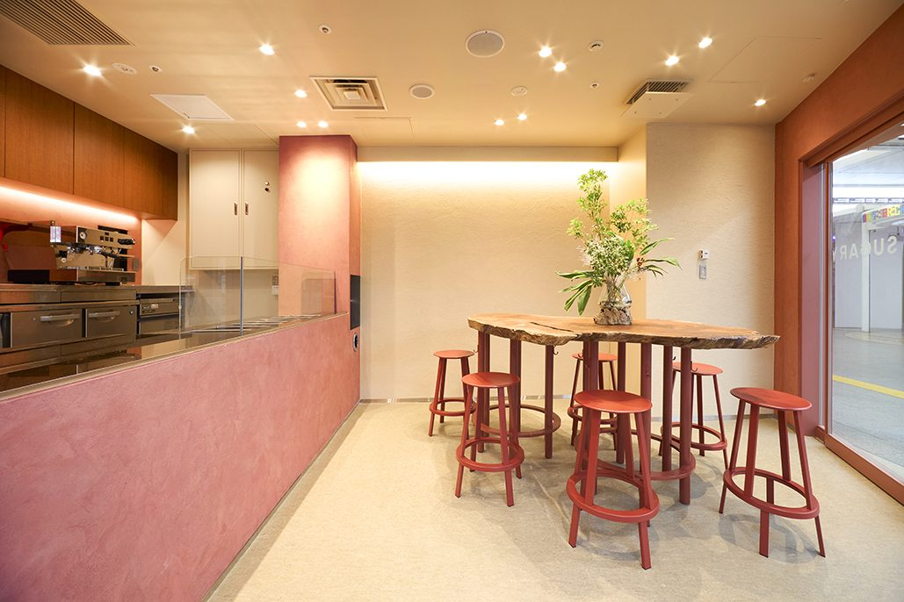
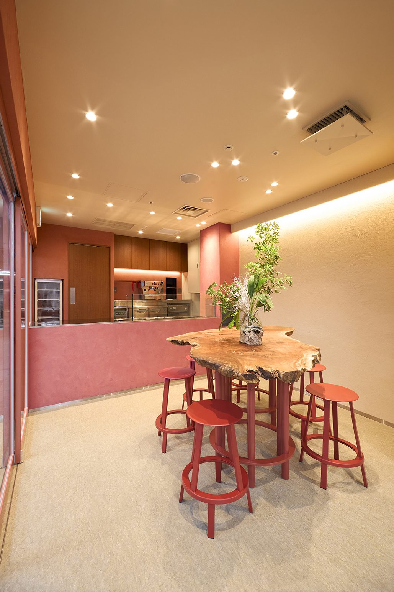
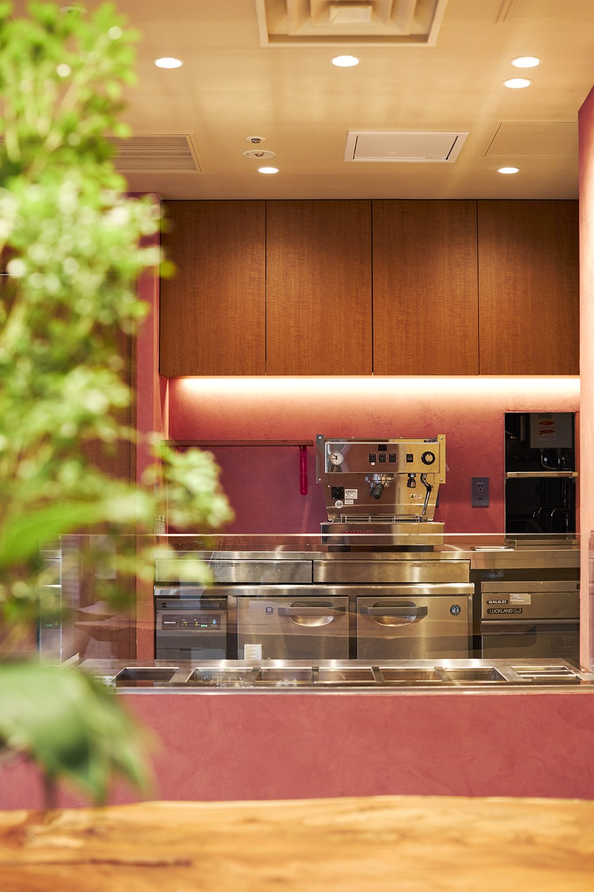
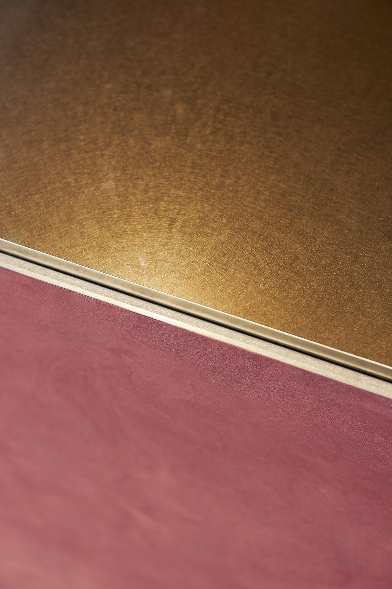
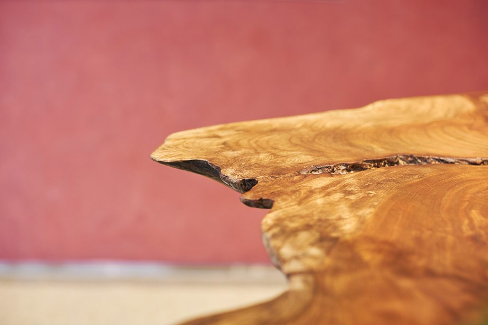
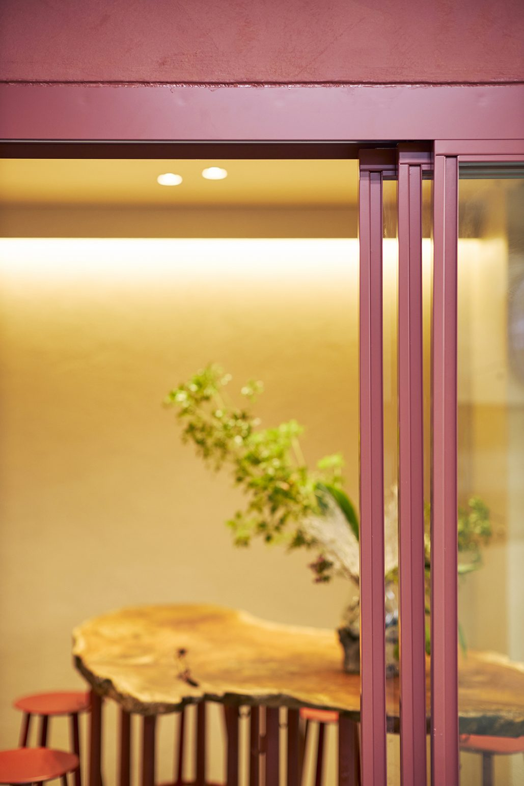
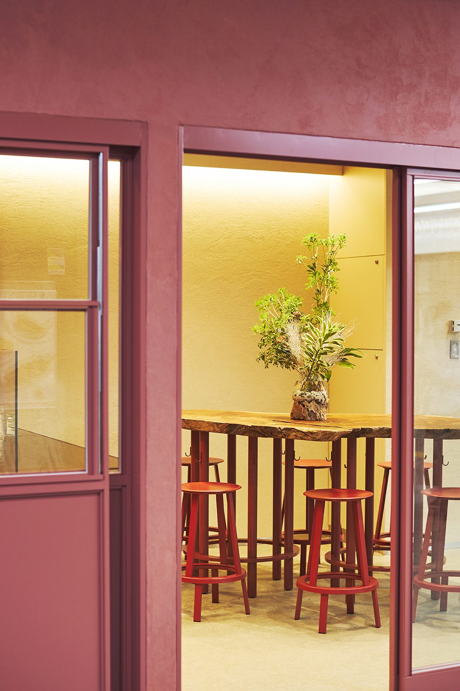
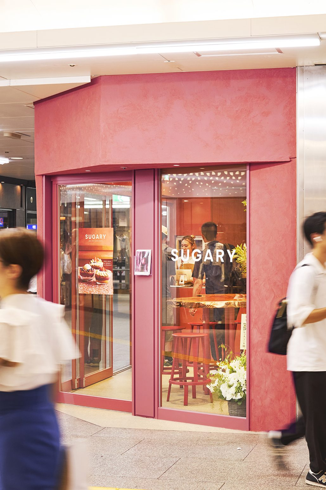

Sugary 阪急三番街
阪急三番街のバスターミナルに近接し、行き交う人の流れが絶えない立地に計画した小さな店舗。通過動線の中でアサイーを気軽に手に取り、日常の一部として持ち帰ることを主としたテイクアウト中心のスタンド型店舗とした。
空間の核には、全周に耳を残した欅の無垢材による一枚板のハイテーブルを据えている。自然が生み出した不均質な輪郭や力強い表情は、スーパーフードであるアサイーが持つ自然由来のエネルギーと重なり合う存在として採用した。加工されすぎない素材そのものの形や表情で、食の背景にある自然の力が伝わることを期待している。
テーブルの周囲に人が集う様子は、実を求めて枝先に集まる鳥の姿を思わせる。アサイーを求めて立ち寄る人々が一時的に集まり、またそれぞれの行き先へと散っていく。その一方で、店内で飲食を楽しまれる際には、自然と人がテーブルを囲み、短い時間ながらも場が生まれる構成とした。
「アサイーのスタンド」と「植物の魅力に引き寄せられる人」という二つの要素で空間を構成している。自然物が持つ形や力に惹かれ、人が集い、また流れていく。その繰り返しが、この場所に軽やかな滞留とリズムを生み出し、都市の動線の中にSUGARYらしい風景をつくり出し、それそのものが店舗のファサードとなる計画とした。
設計・監理：a.d.p（坂田裕貴、安部くるみ） 協力：タムテ 柳館
施工：ヤシマ工業
天板：torinoki furniture
所在地：大阪府
用途：店舗（改修）
構造：鉄骨造
延床面積：26.1m²
竣工：2025年8月
写真：circle photo studio








